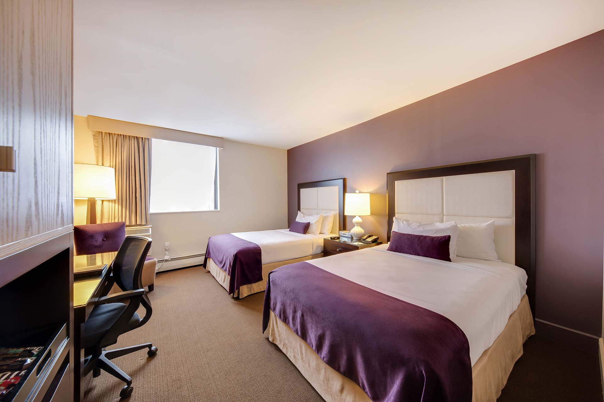
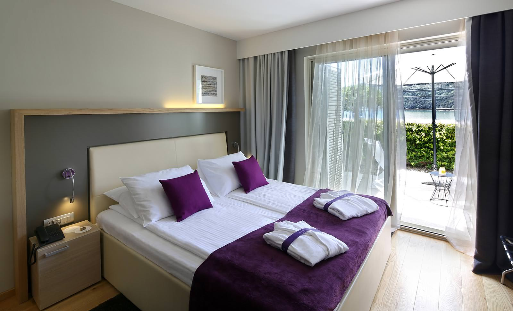
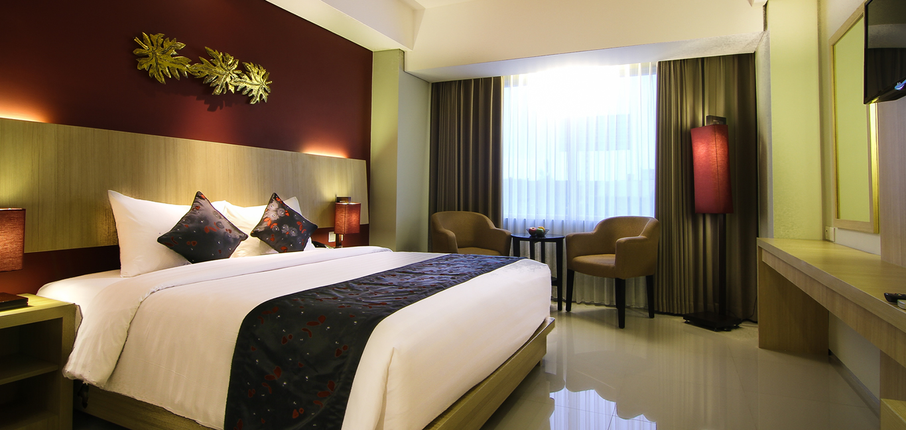

HOME PAGE
The Hotel occupancy capacity is two hundred and forty six (246). All the rooms have en-suite Shower and WC, Air Conditioning, TV with DSTV Channels, Telephone & Hair Dryers. They include:
- The Kana Suite: Measuring an expansive 57m squared, with one bedroom, a balcony, and the additional facilities of a living space, dining area and pantry, our two suites are bright, airy, comfortable and stylishly accented in earthy colours. The pantry is well-equipped with a fridge, microwave, and tea & coffee making facilities, while the integrated dining room is furnished with a table for four. The sitting room offers a comfy sofa and chair, and the spacious sleeping area has a king-size bed, built-in wardrobes, dressing tables and wall mirrors, reading lamps, sofa, dining table and chairs. Each Suite is equipped with air-conditioning, complimentary Wi-Fi Internet access, a safe deposit box, hair dryer and IDD telephone. Genuine attention to detail is shown with considerate touches such as high-quality King-Koil mattresses and Diamond pillows. Each suite has a private en suite bathroom fitted with a bathtub, shower, washbasin, and WC.
- Family Duplex: Measuring 37m squared, the 10 Family Duplex Rooms are extremely spacious, comfortable bright and airy. Each duplex is accented with deep colours and a splash of gold, and spread over two levels presenting two bedrooms, one of which is furnished with a king-size bed and the other with twin beds, making this the perfect arrangement for a family of four. Each is outfitted with built-in wardrobes, dressing tables and wall mirrors, reading lamps, chairs and a table. Each is equipped with air-conditioning, a 32-inch satellite-channel TV, complimentary Wi-Fi Internet access, tea & coffee making facilities, safe deposit box, mini-fridge, hair dryer and IDD telephone. Genuine attention to detail is shown with considerate touches such as high-quality King-Koil mattresses and Diamond pillows. Each Family Duplex has a private en suite bathroom fitted with a shower, washbasin, and WC.
- Family Deluxe Triple: Measuring 30m squared in size, designed for a triple or family with young child. Utilized an additional extrabed for the 3rdperson and each includes relaxing facility of comfortable sofa that can be converted to an sofa bed. furnished with a king-size bed or twin beds, built-in wardrobes, reading lamps, chairs and a table, and each is equipped with air-conditioning, flat screen satellite-channel TV, complimentary Wi-Fi Internet access, tea & coffee making facilities, safe deposit box, mini-fridge and IDD telephone. Each Family Deluxe has a private en suite bathroom fitted with a walk-in shower, washbasin and WC
- Family Deluxe: With a 30m squared measurement, the 12 Family Deluxe are generous in size, designed for a couples or small family. Each one comes with an integrated living space complete with a comfortable sofa that can be converted to an sofa bed. It is furnished with a king-size bed or twin beds, built-in wardrobes, reading lamps, chairs and a table, and each is equipped with air-conditioning, flat-screen satellite-channel TV, complimentary Wi-Fi Internet access, tea & coffee making facilities, safe deposit box, mini-fridge and IDD telephone. Each Family Deluxe has a private en suite bathroom fitted with a walk-in shower, washbasin and WC
- Deluxe Balcony: The 12 Deluxe Balcony Rooms are the same as the Deluxe Rooms but larger, measuring 32m squared in size, with the additional relaxing facility of a furnished balcony overlooking the hotel’s swimming pool. Designed to provide space, peace, comfort and privacy, each room is furnished with a king-size bed or twin beds, built-in wardrobes, reading lamps, chairs and a table, and each is equipped with air-conditioning, flat-screen satellite-channel TV, complimentary Wi-Fi Internet access, tea & coffee making facilities, safe deposit box, mini-fridge, hair dryer and IDD telephone. Genuine attention to detail is shown with considerate touches such as high-quality King-Koil mattresses and Diamond pillows. Each Deluxe Balcony Room has a private en suite bathroom fitted with a walk-in shower, washbasin, and WC.
- Deluxe Room: Decorated in earthy colours and measuring 25m squared in size, the 56 Deluxe Rooms are designed to provide space, peace, comfort and privacy. Each immaculate room is furnished with a king-size bed or twin beds, built-in wardrobes, reading lamps, chairs and a table, and each is equipped with air-conditioning, flat screen satellite-channel TV, complimentary Wi-Fi Internet access, tea & coffee making facilities, safe deposit box, mini-fridge, hairdryer and IDD telephone. Genuine attention to detail is shown with considerate touches such as high-quality King-Koil mattresses and Diamond pillows. Each Deluxe Room has a private ensuite bathroom fitted with a walk-in shower, washbasin and WC.
The rooms have ample working space for business traveler with balconies that enjoys generous sea or gardens view.


